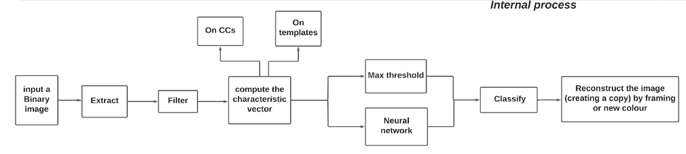

This was a collaboration project between my university the South Dakota university and the NIH
I did it with the help of three other students at my university as a part of our study under the module of projet tutoré which is the French for (tutored project), our work was a small part of this giant project that have started since 2016.
In concept the project in general is to automatically identify the anomalies in the medical images and let the doctor know about them, in our section of the project the program have already did identify the anomalies, but the arrows were unnoticeable by the doctors so it was up to the four of us to identify the arrows separate them by the templates that are given to us and then to make them noticeable.
We have used a lot of methods to do so, as you can see in the diagram, first of all we have extracted all of the connected components, then we filtrate them and remove the obvious components that don’t resemble the templates.
After that we do a deep test to each component that remains to make sure that we won’t have a false positive (false positive means that a component is identified as a template even though it is not a template) we do this by either comparing the max threshold via the GFD and Jaccard index or by using the neural networks and we classify the components by the templates that have validated them.
Then we ask the user if they want the arrows to be colorized or framing them and of course if they chose to colorize the arrows, then for each template there will be a specific color, then we do this final task via comparing the coordinates of the validated components and the coordinates in the provided medical images.
Of course, since it was a huge project our supervisor had given us a java project that detect the anomalies and create the arrows and then extract the connected components and put them in different folders that represent the medical images provided to the program.
Our work was to clean this java project and find a way to use it in our program that is written in python which we did using the subprocess function in python.
